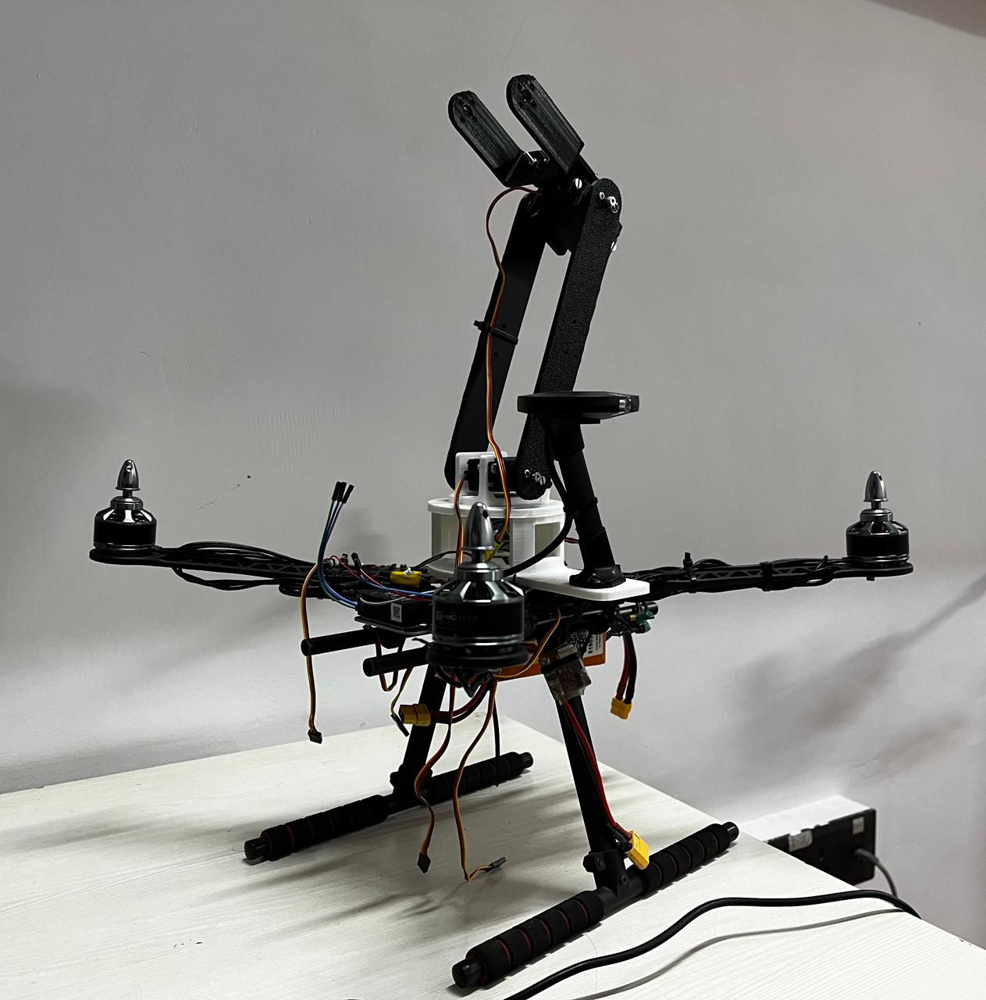
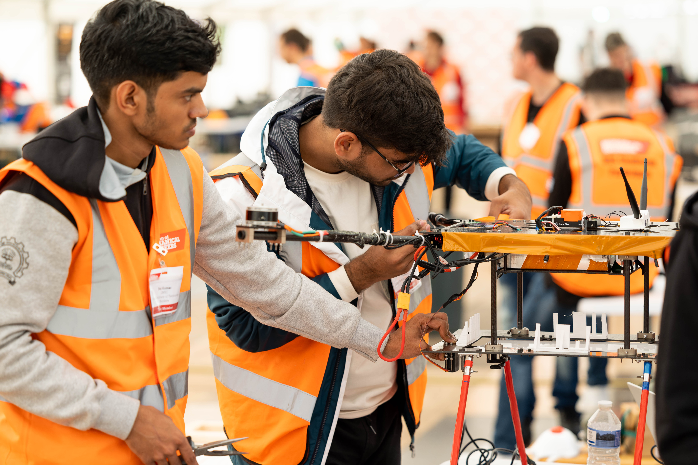
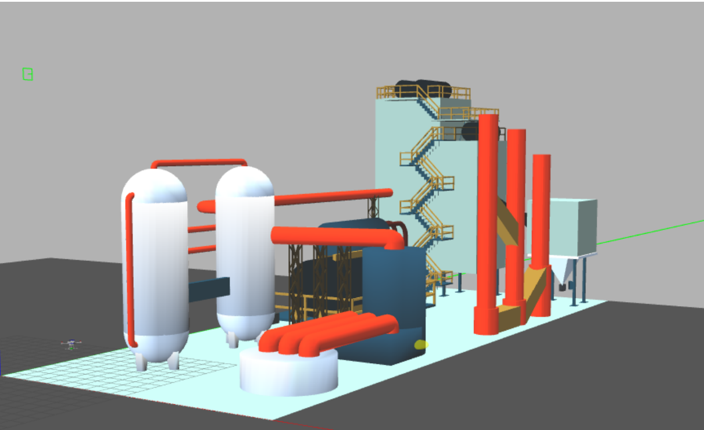

May 2024 - June 2025

Designed and developed a fully autonomous aerial manipulation platform integrating a quadcopter with a 2-degree-of-freedom robotic arm. The system performs precision tasks including object detection, approach, and manipulation in complex environments.
Masters Thesis, IIT Bombay
Read More
Sep 2020 - Aug 2022
 Led a team in the world's longest-running collegiate aerial robotics competition. World Champions of the Simulation Challenge 2020, hosted by AUVSI with teams from 5 continents.
Led a team in the world's longest-running collegiate aerial robotics competition. World Champions of the Simulation Challenge 2020, hosted by AUVSI with teams from 5 continents.
AUVSI Foundation - USA
Read More
Dec 2022 - June 2023

Led a team of nine engineers in the iMECHE UAS Challenge, winning three awards: Best Design, Scrutineering Award, and Advancement Award. Designed a 7 kg relief drone with 6 kg payload capacity for humanitarian missions.
iMECHE - London, UK
Read More
Jan 2022 - May 2023

Developed algorithms for a fully autonomous firefighting drone capable of avoiding obstacles in confined spaces. World Champions in the simulation stage and 2nd Runner Ups in live trials held in Warsaw, Poland.
ICUAS - Warsaw, Poland
Read More
May 2022
Deployed a modified Vector Field Histogram algorithm for speed-controlled obstacle avoidance in GPS-denied environments. Integrated depth information for robust evasiveness and validated across multiple simulation arenas.
ICUAS - Warsaw, Poland
Read More
Mar 2022
 Secured 3rd place nationally in the DRDO UAV-UGV challenge at Inter IIT Tech Meet 10.0. Implemented Stanley and PID controllers for UGV control with cubic and quintic spline interpolators for smooth trajectory generation and UAV feedback for precise tracking.
Secured 3rd place nationally in the DRDO UAV-UGV challenge at Inter IIT Tech Meet 10.0. Implemented Stanley and PID controllers for UGV control with cubic and quintic spline interpolators for smooth trajectory generation and UAV feedback for precise tracking.
DRDO - Inter IIT Tech Meet
Read More
{kind=link}
{kind=link}
{kind=link}
{kind=link}
{kind=link}
{kind=link}
{kind=link}
{kind=link}